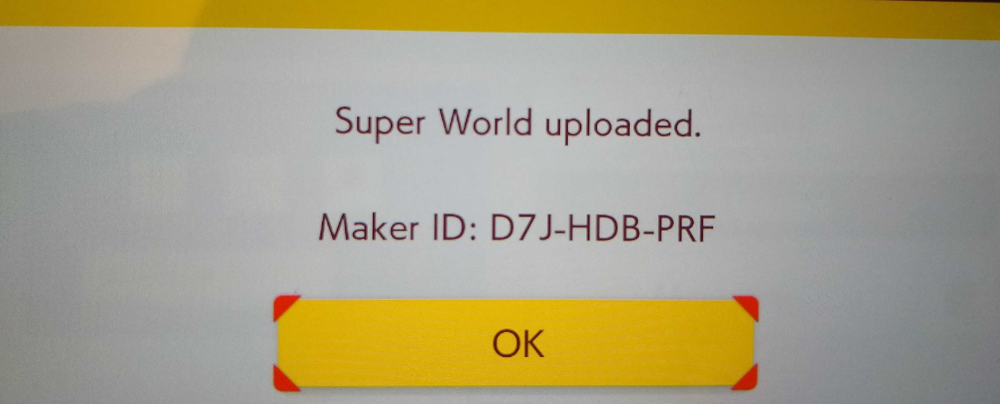

Barrett was a part of the Game Development Club at Illinois State University. At his time there, he helped create Plunder the Present and Rusted Vengence, which can be found here: Link to ISU Game Dev itch.io
Barrett also develops games on his own!!!: My itch.io
Barrett has also made a Super World with 10 levels of increasing difficulty. Check them out here:
